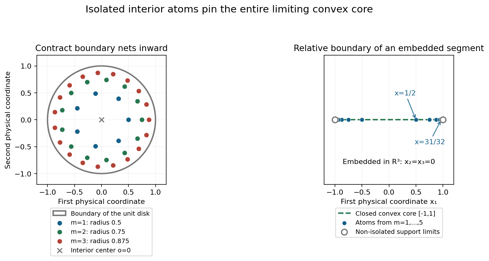
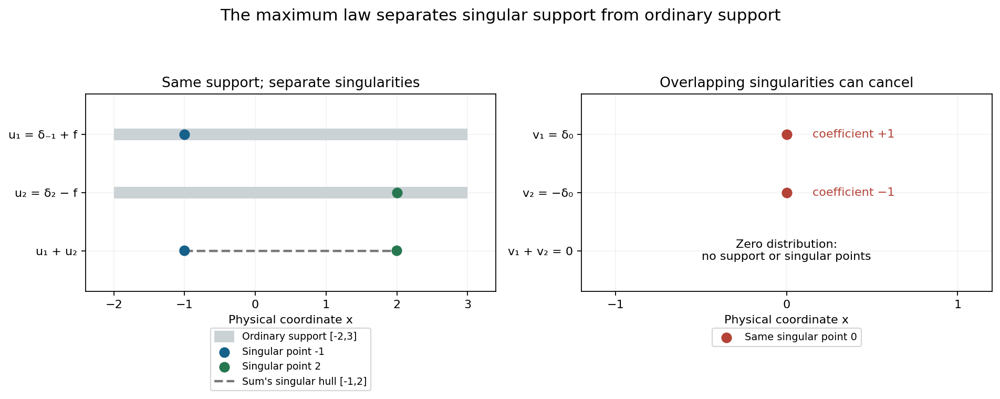

Isolated atoms and separated singularities
Original exposition and proofs: GPT-6.1 Sol (OpenAI), Ultra. CC0 1.0. Self-checked by the writing AI; independent mathematical review is not claimed.
An isolated atom cannot lose its singularity when we select a convolution profile. This forces every profile carrier to contain that atom. A collection of isolated atoms can therefore pin an entire convex body inside every carrier, even when the distribution has infinitely many support points. Separate singularities also let us recover the exact maximum law for the indicators of a sum.
Basic references are Tao's 246B, Notes 2 and 245B, Notes 9, and Hörmander's The Analysis of Linear Partial Differential Operators I and II. Prerequisites are Recovering singularities from convolution profiles, for a compact selector singular at one point; Changing centers in Fourier windows, for simultaneous control of finitely many profiles; and Joint logarithmic-frequency limits, for extraction on common frequencies. The complete proof supplies the local convolution calculus, the isolated-point bound, the full relative-boundary atomic construction and both directions of the joint maximum formula.
1. A geometric core shared by every profile
Let \(u\) be a compact distribution. Its logarithmic profiles use
\[ F_u(\zeta)=\langle u,e^{-ix\cdot\zeta}\rangle,\qquad L_u(z,c)=\frac{\log|F_u(c+z\log|c|)|}{\log|c|}. \tag{T1} \]The centers \(c\) are real and escape to infinity. A proper profile converges locally in \(L^1\), with a canonical PSH representative. Its indicator \(h\) is the support function of a nonempty compact convex carrier \(C_h\). A collapsed profile has indicator \(-\infty\) and empty carrier.
Write \(I(u)\) for the isolated points of the ordinary support, and let
\[ K_I=\overline{\operatorname{conv}I(u)}. \tag{T2} \]Theorem 3.1 of the complete proof gives
\[ K_I\subset C_h \quad\text{for every }h\in\mathcal J(u). \tag{T3} \]If \(I(u)\) is nonempty, no profile collapses and \(u\) is invertible.
To understand the mechanism, split off the distribution \(a\) supported at an isolated point \(x\), leaving a remainder \(b\) that vanishes near \(x\). Select a compact \(v\) singular only at zero so that the output singular hull is the chosen \(C_h\). The point-supported polynomial operator \(a\) has output singular hull exactly \(\{x\}\). The remainder \(b*v\) is smooth near \(x\), since
\[ \operatorname{sing\,supp}(b*v) \subset\operatorname{sing\,supp}b+ \operatorname{sing\,supp}v =\operatorname{sing\,supp}b. \tag{T4} \]Thus the singularity at \(x\) survives in \(u*v\), forcing \(x\in C_h\). This works for every isolated support point and every selected profile.
The convolution containment in (T4) has a full proof in Lemma 2.1. It follows by cutting each compact distribution into a compact smooth part and a part supported in an arbitrarily small neighborhood of its singular support. Every convolution term with a smooth factor is smooth. Only the pair of small singular neighborhoods can contribute singular points.
For nonzero finite-support distributions, every support point is isolated. The common core is the entire convex hull of the support, while every carrier is already contained in that hull. Therefore
\[ \mathcal J(u)=\{H_{\operatorname{conv}(\operatorname{supp}u)}\}. \tag{T5} \]Its convolution singular hull always adds exactly to the unknown input hull.
2. Prescribing a convex carrier with positive atoms
Theorem 4.1 constructs a nonnegative measure with any compact convex \(K\) as its sole profile carrier. Empty \(K\) uses the zero measure. A singleton uses one point mass.
In positive affine dimension, work in the affine hull \(A\) of \(K\), and choose a relative-interior point \(o\). On each finite \(1/m\)-net of the relative boundary \(B\), move the net inward:
\[ x_{m,b}=2^{-m}o+(1-2^{-m})b,\qquad b\in B_m. \tag{T6} \]These points are interior relative to \(A\), are distinct, and approach exactly the boundary. Each is isolated among the support points, because all sufficiently late blocks lie close to the boundary while this fixed interior point has positive distance from it.
List them as \(x_1,x_2,\ldots\), and set
\[ u=\sum_{j\geq1}2^{-j}\delta_{x_j}. \tag{T7} \]The weights are positive and total one. The closed convex hull of the isolated atoms contains every boundary point and hence all of \(K\). Formula (T3) forces \(K\) into every carrier; support containment forces the reverse inclusion. Thus \(\mathcal J(u)=\{H_K\}\).
The support of the measure includes the boundary limit points. It need not consist just of the atoms. All support points are singular in this construction: singularity at each isolated atom and closedness of singular support include their entire closure.

Figure 1. On the left, \(o=0\), \(K\) is the unit disk, and the boundary net for block \(m\) has \(\lceil2\pi m\rceil\) equally spaced points. The first three contracted blocks are shown; the complete construction uses all \(m\geq1\). On the right, the first five pairs of Example 3's atoms approach the endpoints of the segment in \(\mathbb R^3\), with \(x_2=x_3=0\). The endpoints belong to the support as limits and are not isolated atoms. Marker sizes show locations, not masses. Proof locators: complete proof, Theorems 3.1 and 4.1; Example 3 and Exercises 5–7. Background: Hörmander's isolated-support-point geometry.
3. A sum uses a common frequency tuple
For compact distributions \(u_1,\ldots,u_k\) with pairwise disjoint singular supports, put \(u=\sum_i u_i\). Theorem 6.1 states that a joint tuple satisfies
\[ (h,h_1,\ldots,h_k)\in\mathcal J(u,u_1,\ldots,u_k) \quad\Longrightarrow\quad h=\max_i h_i. \tag{T8} \]Consequently
\[ \mathcal J(u)= \{\max_i h_i:(h_1,\ldots,h_k) \in\mathcal J(u_1,\ldots,u_k)\}. \tag{T9} \]The maximum is pointwise in the direction. A collapsed coordinate contributes \(-\infty\); an entirely collapsed tuple gives a collapsed sum.
The joint condition matters. The two transforms in a sum can cancel, and one cannot choose unrelated frequency sequences for the components. The proof instead selects one convolution factor for the whole finite tuple. Each convolved component has the prescribed carrier and has singular support inside its original singular support. These singular supports remain disjoint, so none can cancel locally. Their union has convex hull whose support function is exactly the maximum in (T8).
Ordinary supports may overlap. It is the separation of singular supports that ensures this local noncancellation.
4. Four worked examples
Example 1: a finite constellation of differential atoms
In \(\mathbb R^2\), take
\[ u=\delta_{(-2,0)} +\partial_1\delta_{(1,0)} +(1-\partial_2^2)\delta_{(0,2)}. \tag{T10} \]Each term is a nonzero point-supported distribution, and the support consists of exactly those three distinct points. Hence every indicator is
\[ h(\eta_1,\eta_2) =\max\{-2\eta_1,\eta_1,2\eta_2\}. \tag{T11} \]The carrier is the triangle with those vertices. For instance \(h(1,0)=1\), \(h(-1,0)=2\), \(h(0,1)=2\), and \(h(0,-1)=0\).
The derivative orders and coefficients affect the profiles and transform zeros, but do not alter this unique indicator. For every compact \(w\), its output singular hull is the triangle plus \(S_w\). The statement concerns singular hulls, not the assertion that every point of that triangle is singular in \(u\).
Example 2: overlapping support with separate singularities
Let \(f\) be smooth, supported in \([-2,3]\), and positive on \((-2,3)\), and define on the line
\[ u_1=\delta_{-1}+f,\qquad u_2=\delta_2-f. \tag{T12} \]Both ordinary supports are \([-2,3]\), but their singular supports are the separate singletons \(\{-1\}\) and \(\{2\}\). Their sum is \(\delta_{-1}+\delta_2\).
The profile indicators of the summands are \(-\eta\) and \(2\eta\). To check this without treating the smooth part as a singular atom, integrate its compact smooth transform by parts. For \(q=|c|\), \(|z|\leq M\), and all sufficiently large \(q\),
\[ |F_f(c+z\log q)|\leq C_{N,M}q^{-N+3M} \quad\text{for every integer }N. \tag{T13} \]Here \(|c+\operatorname{Re}z\log q|\geq q/2\), so the complex denominator from integration by parts has modulus at least \(q/2\). The physical exponential on \([-2,3]\) has modulus at most \(q^{3M}\). There are no boundary terms. After dividing by the point-mass exponential, at worst another \(q^{2M}\) appears. Choose \(N>5M\). The ratio of the smooth transform to that exponential tends uniformly to zero. Thus
\[ L_{u_1}(z,c)\longrightarrow-\operatorname{Im}z,\qquad L_{u_2}(z,c)\longrightarrow2\operatorname{Im}z \tag{T14} \]locally uniformly. These give the stated indicators.
The maximum law, or finite-support Corollary 3.2, now gives
\[ \mathcal J(u_1+u_2)=\{\max(-\eta,2\eta)\} =\{H_{[-1,2]}(\eta)\}. \tag{T15} \]The cancellation of the smooth backgrounds is allowed. The separated point singularities survive.
Example 3: infinitely many isolated atoms on a segment
Take the segment from \((-1,0,0)\) to \((1,0,0)\) in \(\mathbb R^3\), and define
\[ u=\sum_{m=1}^{\infty}2^{-m-1} \left(\delta_{(-(1-2^{-m}),0,0)} +\delta_{((1-2^{-m}),0,0)}\right). \tag{T16} \]The measure has mass one. Its atoms are isolated, while the two endpoints are non-isolated support points. Their closed convex hull is the entire segment. Therefore every indicator is \(h(\eta)=|\eta_1|\), including directions with nonzero second and third coordinates. Those coordinates do not affect the dot product with this segment.
The relative boundary consists of two endpoints. Its ambient boundary is the whole segment, because it has empty interior in \(\mathbb R^3\). The relative construction is what gives isolated interior atoms approaching just the two endpoints. The transform is
\[ F_u(\zeta)=\sum_{m\geq1}2^{-m} \cos((1-2^{-m})\zeta_1). \tag{T17} \]This series converges uniformly on compact complex sets: each cosine is bounded by \(e^{|\operatorname{Im}\zeta_1|}\), and the weights sum to one. Its unique indicator follows from the isolated-atom proof, without replacing the finite maximum theorem by an unproved infinite-sum version.
Example 4: why singular-support separation is essential
Let \(u_1=\delta_0\), \(u_2=-\delta_0\). Each has the constant-zero logarithmic profile and indicator zero, and their joint pair is \((0,0)\) on every escaping real sequence. Yet \(u_1+u_2=0\), so the sum has only the collapsed indicator \(-\infty\).
Thus \(\max(0,0)=0\) is not the sum's indicator. The singular supports coincide at zero and the two singularities cancel completely. This violates the hypothesis of the maximum law. By contrast, a compact smooth summand has empty singular support, disjoint from every other one. Its collapsed indicator contributes nothing to a maximum with a proper indicator.

Figure 2. The left panel shows Example 2's ordinary supports \([-2,3]\), singular points \(-1\) and \(2\), and the sum's singular hull \([-1,2]\). The right panel shows Example 4's complete cancellation at zero. Vertical positions distinguish distribution rows; only the horizontal coordinate is physical. Gray support intervals are not distribution densities. Proof locators: complete proof, Lemma 2.2 and Theorem 6.1; Examples 2 and 4. Background: Hörmander's convolution profile geometry and Tao's Fourier discussion.
Exercises with complete solutions
The exercises total 100 points.
Exercise 1: singular-support convolution containment (10 points)
Prove \(\operatorname{sing\,supp}(a*b)\subset \operatorname{sing\,supp}a+\operatorname{sing\,supp}b\) for compact distributions. Include the case of a smooth factor.
Solution. A compact smooth factor \(f\) gives \((f*b)(x)=\langle b(y),f(x-y)\rangle\), with a fixed cutoff in \(y\). Differentiation in \(x\) converges in all test-function seminorms and passes through the continuous distribution pairing, so this is smooth. For nonempty singular supports, cut \(a\) into \(a_\varepsilon\) supported in their radius-\(\varepsilon\) neighborhood and a compact smooth remainder, using a cutoff equal to one near its singular support. Do the same for \(b\). In their convolution expansion every term but \(a_\varepsilon*b_\varepsilon\) has a smooth factor. The remaining term is supported in the sum of the two small support neighborhoods. Hence the singular support is within the radius-\(2\varepsilon\) neighborhood of the compact singular-support sum. A point outside that closed sum has positive distance from it. Choose \(\varepsilon\) smaller than half the distance to exclude it. If one singular support is empty, that factor is smooth and the first argument applies.
Exercise 2: local noncancellation (8 points)
Show that a finite sum with pairwise disjoint singular supports has singular support equal to their union. Explain why ordinary support disjointness is unnecessary.
Solution. Outside the union every summand is locally smooth. At a point in one singular support, choose a neighborhood avoiding all the other singular supports; there are only finitely many closed sets to avoid. The other summands are smooth there. If the sum were smooth, subtracting those smooth functions would make the one singular summand smooth too, a contradiction. Ordinary supports can overlap in regions where their distributions are smooth. The proof only uses local smoothness of the other summands, as Example 2 illustrates.
Exercise 3: an isolated point in the ordinary support (12 points)
Prove directly that every profile carrier contains an isolated support point \(x\), including why a collapsed profile is impossible.
Solution. Split \(u=a+b\) with \(a\neq0\) supported at \(x\) and \(b\) vanishing near \(x\), using an isolating smooth cutoff. Realize the chosen indicator \(h\) by a compact selector \(v\) singular only at zero, with \(S_{u*v}=C_h\). The full point-supported polynomial theorem gives \(S_{a*v}=\{x\}+S_v=\{x\}\), so \(a*v\) is singular exactly at \(x\). Exercise 1 gives \(\operatorname{sing\,supp}(b*v)\subset\operatorname{sing\,supp}b\), which avoids a neighborhood of \(x\). This smooth contribution cannot cancel the singularity of \(a*v\). Therefore \(x\in S_{u*v}=C_h\). If the chosen profile were collapsed its carrier would be empty, a contradiction. Applying this to every isolated support point and taking a closed convex hull puts their entire common core in every carrier.
Exercise 4: a finite-support triangle (8 points)
For Example 1 compute the indicator in directions \((1,1)\), \((-1,1)\) and \((0,-1)\). Why does the order-two derivative at the top vertex not change the carrier? Does the distribution have singularities at every interior point of the triangle?
Solution. Formula (T11) gives respectively \(\max(-2,1,2)=2\), \(\max(2,-1,2)=2\), and \(\max(0,0,-2)=0\). Each of the three support points is isolated and is in every carrier; every carrier is already in their convex hull. The derivative order changes the Fourier polynomial at that point but the nonzero point-supported profile indicator remains the point's linear support function. Thus the carrier is the same triangle. The actual singular support is just the three vertices: each nonzero point-supported summand is singular there, and the distribution vanishes locally everywhere else. Interior points of the triangle are hull points rather than new singular points.
Exercise 5: empty sets, singletons and relative boundary (10 points)
Give a measure with sole carrier \(K\) when \(K\) is empty or a singleton. For a nontrivial segment in \(\mathbb R^3\), identify the relative interior and relative boundary and explain why the ambient boundary gives the wrong construction.
Solution. Use \(u=0\) for empty \(K\), with sole indicator \(-\infty\) and empty carrier. For \(K=\{x\}\), use \(\delta_x\), whose translation profile has indicator \(x\cdot\eta\) and carrier \(\{x\}\). For a segment the affine hull is its line. The relative interior is the open segment, and the relative boundary is its two endpoints. Moving these two endpoints inward in successive blocks gives isolated interior atoms whose only accumulation points are the endpoints. In the ambient space the segment has empty interior, so its ambient boundary is the entire segment. Interior atoms chosen to accumulate everywhere along it would no longer have the isolation property used to pin every carrier. The construction must use the geometry in the affine hull. A singleton has empty relative boundary, which is why it needs its own direct point-mass case.
Exercise 6: the mass, support and transform of the segment measure (10 points)
Verify the mass, support and transform of (T16), and determine all its indicator values. Justify compact complex convergence of its transform series.
Solution. The mass is \(\sum_{m\geq1}2\cdot2^{-m-1}=\sum_{m\geq1}2^{-m}=1\). Its support is the closure of the atoms: those isolated points together with the two endpoints. Every neighborhood of an atom has positive mass, and every neighborhood of an endpoint contains an atom. Outside this closure an open neighborhood contains no atom and has zero measure. Pairing the two point-mass exponentials at each \(m\) gives \(2^{-m}\cos((1-2^{-m})\zeta_1)\). On a compact complex set with \(|\operatorname{Im}\zeta_1|\leq R\), its modulus is at most \(2^{-m}e^R\). Uniform summability proves the series convergence and permits its identification with the measure's Fourier integral. The closed convex hull of the isolated atoms is the segment. The common-core theorem and the upper carrier containment give the sole indicator \(h(\eta)=|\eta_1|\). In directions \((0,1,0)\), \((1,0,2)\) and \((-3,4,5)\), the values are \(0,1,3\).
Exercise 7: why each contracted boundary net gives isolated atoms (12 points)
For the construction (T6), prove that every point is in the relative interior, that different blocks have distinct points, and that the accumulation set is exactly the relative boundary.
Solution. Choose a relative ball of radius \(r\) about \(o\) inside \(K\). Convexity places the ball of radius \(2^{-m}r\) about \(x_{m,b}\) inside \(K\), so the point is in the relative interior. Equality of points from two blocks puts their boundary points on the same ray from \(o\). Such a ray has only one boundary endpoint. An earlier point on that ray with a later point of \(K\) beyond it would have a relative ball from convex interpolation with the ball about \(o\), and would be interior. Thus the endpoints agree, and equality of the two contractions forces their indices to agree. Distinct points within a net stay distinct under contraction. Writing \(R=\max_{b\in B}|b-o|\), every point of block \(m\) has distance at most \(2^{-m}R\) from \(B\). A subsequence through infinitely many blocks can therefore accumulate only on \(B\); finitely many blocks contain finitely many points and cannot supply a new accumulation point. Conversely the \(1/m\)-nets approximate any fixed boundary point, and their contracted points differ from it by at most \(1/m+2^{-m}R\). This tends to zero through distinct points. A fixed interior atom has positive distance from \(B\). All late blocks are outside a sufficiently small neighborhood of it, and the finitely many early atoms can be removed by a smaller neighborhood. Hence it is isolated in the full support.
Exercise 8: a common selector for a joint tuple (10 points)
Explain how one selector can realize several prescribed carriers on the same escaping sequence. Include collapsed coordinates and why separate selectors would not prove the maximum law.
Solution. Take one logarithmic neighborhood union controlling the entire finite tuple. The common-neighborhood corollary takes the maximum of finitely many thresholds for each compact parameter ball and tolerance, then builds one expanding radius sequence. Proper coordinates have their own indicator ceilings; collapsed coordinates collapse throughout that union. The compact selector collapses outside it and has the zero profile on a subsequence of the original centers. Every proper selected input profile is retained on this subsequence, so its product attains the desired carrier. Every other proper product carrier comes from centers inside the union; the input ceiling bounds it by the prescribed carrier and the selector's proper carrier is \(\{0\}\). Hull recovery gives exact equality. For a collapsed coordinate, the input collapses inside and the selector outside. A common local upper bound for the other factor and a maximum of the two frequency thresholds force every product profile to collapse; its hull is empty. Separate selectors would produce different outputs and would not give a single identity \(u*v=\sum_i u_i*v\) with all prescribed hulls simultaneously. The finite common construction supplies the shared factor required for that identity.
Exercise 9: both directions of the family maximum formula (12 points)
Prove the joint maximum identity for separate singularities, and then both inclusions in (T9). Explain the all-collapsed case.
Solution. Use a common selector for the tuple consisting of the sum and all summands. Its output singular hulls are the prescribed carriers \(C_h,C_{h_i}\). Convolution with this selector puts each output singular support inside the original one, so they remain pairwise disjoint. The local noncancellation result makes their sum's singular support their union. Taking convex hulls gives \(C_h=\operatorname{conv}\bigcup_i C_{h_i}\), whose support function is \(\max_i h_i\). For an indicator of the sum, finite projection extends its profile to every summand on a common further subsequence. The joint identity then puts it in the right side of (T9). Conversely a joint tuple of summand profiles extends to include the sum, retaining all the prescribed profiles. The same identity proves that their maximum is an actual sum indicator. If all summand carriers are empty, all selected outputs are smooth and their finite sum is smooth. Its hull is empty and its indicator is \(-\infty=\max_i(-\infty)\). If some coordinate is proper, the hull union is nonempty and collapsed coordinates can be omitted from the maximum.
Exercise 10: overlapping singularities permit complete cancellation (8 points)
Use two point distributions to disprove a maximum law without singular-support separation. Then explain why a smooth summand does satisfy the separation condition and has no effect on the indicator family.
Solution. Let \(u_1=\delta_0\), \(u_2=-\delta_0\). Their transforms are \(1,-1\), with normalized logarithms zero on every escaping sequence. Their only joint indicator pair is \((0,0)\), but their zero sum has normalized logarithm identically \(-\infty\). Thus its indicator is collapsed rather than the maximum zero. The singular supports both equal \(\{0\}\). A compact smooth summand has empty singular support, disjoint from any singular support. Its only indicator is collapsed. The joint projection theorem permits every original profile to extend to include that smooth summand; its collapsed coordinate is the only possible added one. The maximum theorem therefore preserves every original indicator, since \(\max(h,-\infty)=h\), including an originally collapsed \(h\).
References
- Terence Tao, 246B, Notes 2: Some connections with the Fourier transform, 2021. Compact Fourier transforms and convolution; its normalization differs from (T1).
- Terence Tao, 245B, Notes 9: The Baire category theorem and its Banach space consequences, 2009. Background for the preceding full compact-selector construction.
- Lars Hörmander, The Analysis of Linear Partial Differential Operators I, Springer, 1983.
- Lars Hörmander, The Analysis of Linear Partial Differential Operators II, Springer, 1983, Chapter XVI. The common-core,atomic construction and joint maximum arguments are supplied in the complete proof above.
Complete proof
An isolated point of a distribution's support leaves a singularity that no convolution profile can hide. This gives a common geometric core for all its profile carriers. We use this observation to construct measures with any prescribed compact convex carrier, and then examine the maximum law for sums whose singularities are separate.
Basic references are Tao's 246B, Notes 2 and 245B, Notes 9, and Hörmander's The Analysis of Linear Partial Differential Operators I and II. The prerequisites are Recovering singularities from convolution profiles, especially the one-point selector, its point-supported polynomial operators and its universal hull-addition criterion; Changing centers in Fourier windows, including the finite common-neighborhood corollary; Frequency-selective singularities and smooth convolutions, for the actual compact selector construction; Joint logarithmic-frequency limits, for finite coordinate projection; and Slow decrease and entire Fourier division, for invertibility. The local singular-support calculus needed below is proved here.
1. The geometric information in a profile
For a compact distribution \(u\) on \(\mathbb R^n\), \(n\geq1\), use
\[ F_u(\zeta)=\langle u,e^{-ix\cdot\zeta}\rangle,\qquad L_u(z,c)=\frac{\log|F_u(c+z\log|c|)|}{\log|c|}, \quad c\in\mathbb R^n,\quad |c|>2. \tag{1.1} \]Write \(\mathcal J(u)\) for the directional indicators of proper local \(L^1\) profiles and collapsed profiles. A proper indicator \(h\) is the support function of a nonempty compact convex carrier \(C_h\). The collapsed indicator is \(-\infty\), with \(C_{-\infty}=\varnothing\). Support functions and carriers are taken in this extended sense throughout.
The family \(\mathcal J(u_1,\ldots,u_k)\) consists of indicator tuples from one escaping real sequence with a joint proper-or-collapsed extraction in every coordinate. It is not the Cartesian product of the individual families. Every individual coordinate or finite subtuple can be extended to a tuple containing further compact distributions, by the finite joint-profile projection theorem.
Let
\[ A(u)=\operatorname{sing\,supp}u,\qquad S_u=\operatorname{conv}A(u). \tag{1.2} \]The singular support is compact; its convex hull is compact when nonempty. The full hull recovery theorem proves
\[ S_u=\overline{\operatorname{conv} \bigcup_{h\in\mathcal J(u)}C_h}. \tag{1.3} \]In particular each proper carrier lies in \(S_u\), and \(S_u\) lies in the convex hull of the ordinary support. The family is nonempty by the PSH compactness alternative on any escaping sequence.
If a finite family of indicators has at least one proper member, the function \(\max_i h_i\) is the support function of the convex hull of their proper carriers. Indeed a continuous linear functional has the same supremum on a set and its convex hull. If every member is collapsed, the maximum is \(-\infty\) and this hull is empty.
2. Convolution cannot create a new pair of singular points
We first establish the local facts that prevent cancellation near an isolated singularity.
Lemma 2.1 (compact singular-support calculus). For compact distributions \(a,b\),
\[ \operatorname{supp}(a*b)\subset \operatorname{supp}a+\operatorname{supp}b, \qquad A(a*b)\subset A(a)+A(b). \tag{2.1} \]An empty summand makes the corresponding sum empty. In particular \(a*b\) is smooth if either factor is smooth. If \(A(b)=\{0\}\), then \(A(a*b)\subset A(a)\).
Proof. For the ordinary support assertion, take a test function \(\phi\) supported outside the compact sum of the two supports. Choose compact smooth cutoffs equal to one near those supports and with sufficiently small support neighborhoods. The test function \(\chi_a(x)\chi_b(y)\phi(x+y)\) then vanishes near the product of the two distribution supports. Its iterated distribution pairing, which defines \((a*b)(\phi)\), is zero. More explicitly the positive distance between the two compact sets lets us make \(\phi(x+y)\) identically zero on the product of the cutoff supports. Hence the outer and inner pairings both vanish. This proves the first assertion locally outside that sum.
If \(f\) is compact and smooth and \(b\) is a compact distribution, its convolution is the smooth function
\[ (f*b)(x)=\langle b(y),f(x-y)\rangle. \tag{2.2} \]Insert a fixed cutoff in \(y\), equal to one near \(\operatorname{supp}b\), to make this pairing a test-function pairing. As \(x\) varies on any compact set, each derivative in \(x\) of the cutoff times \(f(x-y)\) exists and varies continuously in every test-function derivative seminorm. Continuity of \(b\) therefore permits every derivative through the pairing. The resulting function represents the convolution distribution: integration against a test function in \(x\) commutes with the pairing because its Riemann sums converge in that same test-function topology. Thus it is smooth. Commutativity gives the same conclusion when the second factor is smooth.
Assume both singular supports are nonempty. For any \(\varepsilon>0\), choose a compact smooth cutoff \(\theta_a\) equal to one on a neighborhood of \(A(a)\) and supported inside its open \(\varepsilon\)-neighborhood. Write
\[ a=\theta_a a+(1-\theta_a)a=a_\varepsilon+a_{\mathrm{sm}}. \tag{2.3} \]The second summand is compact and smooth. It vanishes near \(A(a)\), and elsewhere it is a smooth multiple of a locally smooth distribution. The first is supported within the closed \(\varepsilon\)-neighborhood of \(A(a)\). Decompose \(b\) in the same way.
Every convolution term containing a smooth summand is smooth by (2.2). Consequently
\[ A(a*b)\subset \operatorname{supp}a_\varepsilon+ \operatorname{supp}b_\varepsilon \subset A(a)+A(b)+\overline B_{2\varepsilon}(0). \tag{2.4} \]To justify the first inclusion at a point outside the displayed support sum, the remaining convolution term vanishes on a neighborhood there and all other terms are smooth. The compact set \(A(a)+A(b)\) is closed. Any point outside it has positive distance from it, so (2.4) for sufficiently small \(\varepsilon\) excludes that point from \(A(a*b)\). This proves the second assertion. If one singular support is empty, its compact distribution is smooth and (2.2) proves the empty case directly. \(\square\)
Lemma 2.2 (separate singularities cannot cancel). If \(a_1,\ldots,a_k\) are compact distributions with pairwise disjoint singular supports, then
\[ A\!\left(\sum_i a_i\right)=\bigcup_i A(a_i). \tag{2.5} \]The ordinary supports may overlap.
Proof. Outside the union every summand is smooth locally, so their sum is smooth. If \(x\in A(a_i)\), pairwise disjointness and the finite number of summands give a neighborhood of \(x\) on which all other summands are smooth. If their sum with \(a_i\) were smooth near \(x\), subtracting the other smooth summands would make \(a_i\) smooth there. This contradicts \(x\in A(a_i)\). Thus every point of the union remains singular. \(\square\)
3. Isolated support points belong to every carrier
Let \(I(u)\) be the set of isolated points of the ordinary support of \(u\), and put
\[ K_I=\overline{\operatorname{conv} I(u)}. \tag{3.1} \]If there are no isolated support points, set \(K_I=\varnothing\) and \(H_{K_I}=-\infty\). Otherwise \(K_I\) is a nonempty compact convex set contained in the convex hull of \(\operatorname{supp}u\).
Theorem 3.1 (a common carrier core). Every \(h\in\mathcal J(u)\) satisfies
\[ H_{K_I}(\eta)\leq h(\eta) \quad(\eta\in\mathbb R^n). \tag{3.2} \]Equivalently every carrier contains \(K_I\). If \(I(u)\neq\varnothing\), all profiles are proper; in particular \(u\) is invertible.
Proof. The conclusion is immediate in the empty-\(I(u)\) case, so take \(x\in I(u)\). There is an open ball about \(x\) containing no other point of \(\operatorname{supp}u\). Choose a smooth cutoff equal to one near \(x\) and supported in that ball, and write \(u=a+b\) using that cutoff. Then \(a\) is nonzero and supported at the single point \(x\), while \(b\) vanishes on a neighborhood of \(x\). Nonzero follows from \(x\in\operatorname{supp}u\): if this cutoff piece were zero, \(u\) would vanish near \(x\).
The full point-support finite-jet theorem and polynomial-profile result in the preceding chapter apply to \(a\). For every compact distribution \(v\),
\[ S_{a*v}=\{x\}+S_v. \tag{3.3} \]Fix any \(h\in\mathcal J(u)\). The profile-realization theorem gives a compact continuous \(v\notin C^1\), singular exactly at zero, with
\[ S_v=\{0\},\qquad S_{u*v}=C_h. \tag{3.4} \]It includes the collapsed case, where the second hull is empty.
Formula (3.3) makes \(S_{a*v}=\{x\}\). Thus \(A(a*v)=\{x\}\): a nonempty singular hull consisting of one point has exactly that nonempty singular support. By Lemma 2.1, \(A(b*v)\subset A(b)\), and \(b*v\) is smooth near \(x\). The singularity of \(a*v\) therefore survives in \(u*v=a*v+b*v\), by the local argument of Lemma 2.2. Hence
\[ x\in A(u*v)\subset S_{u*v}=C_h. \tag{3.5} \]This rules out a collapsed \(h\), and places every isolated support point in every proper carrier. Each carrier is closed and convex, so contains \(K_I\). Taking support functions gives (3.2).
When \(I(u)\neq\varnothing\), the absence of a collapsed profile is the full slow-decrease criterion, and hence invertibility, from the preceding entire-division chapter. \(\square\)
The proof uses one selector for the whole distribution and the exact polynomial operator at the isolated point. It does not require a maximum formula for an arbitrary sum of Fourier transforms.
Corollary 3.2 (finite support). Suppose \(u\neq0\) has finite support, and let \(K=\operatorname{conv}(\operatorname{supp}u)\). Then
\[ \mathcal J(u)=\{H_K\},\qquad S_{u*v}=K+S_v \quad\text{for every compact }v. \tag{3.6} \]Thus \(u\) is invertible even though its transform may have real zeros.
Proof. Every support point is isolated, so Theorem 3.1 gives \(H_K\leq h\) for every indicator. Every proper carrier is contained in \(S_u\subset K\), by (1.3), giving the reverse inequality. There is no collapsed indicator and the family is nonempty. Therefore it is exactly \(\{H_K\}\). Every nonzero one-point distribution is singular at its support point. Indeed a smooth function supported at one point is zero, while that distribution is nonzero. Thus every support point of \(u\) is singular and \(S_u=K\). Apply the universal singleton-indicator addition criterion in the preceding chapter to obtain (3.6). \(\square\)
4. Positive atoms can prescribe any compact convex carrier
Theorem 4.1 (a measure with one prescribed indicator). For every compact convex \(K\subset\mathbb R^n\), there is a finite nonnegative measure \(u\), supported in \(K\), such that
\[ \mathcal J(u)=\{H_K\}. \tag{4.1} \]If \(K\neq\varnothing\), \(u\) can have total mass one. It then has singular hull \(K\), is invertible, and satisfies universal singular-hull addition.
Proof for the empty and singleton cases. For \(K=\varnothing\), choose \(u=0\); every profile is collapsed and its sole indicator is \(H_\varnothing=-\infty\). If \(K=\{x\}\), choose \(u=\delta_x\) and use Corollary 3.2.
Construction in positive affine dimension. Let \(A\) be the affine hull of a nonempty \(K\), of dimension \(d\geq1\). Work with the Euclidean metric restricted to \(A\). Choose \(d+1\) affinely independent points of \(K\). Their simplex lies in \(K\), and its barycenter has a relative open ball contained in that simplex. Hence there are \(o\in K\) and \(r>0\) with \(\overline B_r^A(o)\subset K\), after decreasing the radius if necessary. In particular \(o\) is in the relative interior of \(K\).
The relative boundary \(B=\partial_A K\) is compact and nonempty. For any unit direction in \(A\), the ray from \(o\) meets \(K\) in a closed bounded interval of positive length. Its outer endpoint is in \(B\). Every boundary point on that ray is this endpoint: if a point on the ray lay strictly before a further point of \(K\), taking its convex combination with the relative ball about \(o\) would put a relative ball about that point inside \(K\), contradicting its being a boundary point.
For each integer \(m\geq1\), choose a finite \(1/m\)-net \(B_m\subset B\), with distinct points within that net, and set
\[ t_m=1-2^{-m},\qquad X_m=\{(1-t_m)o+t_m b:b\in B_m\}. \tag{4.2} \]A finite net exists by compactness: select finitely many radius-\(1/m\) balls with centers in \(B\) covering \(B\). Every \(x\in X_m\) is in the relative interior of \(K\), since convexity puts the relative ball \(B^A_{(1-t_m)r}(x)\) in \(K\).
All these points are distinct, including across different \(m\). Equality of two such points would put their two boundary points on the same ray from \(o\). The uniqueness of the boundary endpoint on that ray makes the boundary points equal, and then the distinct \(t_m\)'s make the indices equal.
Let \(R=\max_{b\in B}|b-o|\). Every point of \(X_m\) has distance at most \(2^{-m}R\) from \(B\). Therefore every accumulation point of the sequence obtained by listing the finite \(X_m\)'s in increasing \(m\) lies in \(B\). Conversely, for each \(b\in B\) choose \(b_m\in B_m\) with \(|b_m-b|<1/m\), allowing a non-strict bound if needed. Then
\[ |(1-t_m)o+t_m b_m-b| \leq 2^{-m}R+1/m\longrightarrow0. \tag{4.3} \]These points are distinct, so \(b\) is an accumulation point. Thus the accumulation set is exactly \(B\).
Enumerate all the distinct interior points as \(x_1,x_2,\ldots\), and define
\[ u=\sum_{j=1}^{\infty}2^{-j}\delta_{x_j}. \tag{4.4} \]This defines a nonnegative Borel measure of mass one: for any Borel set sum the nonnegative weights of its points; countable additivity follows by interchanging nonnegative sums. Its support is
\[ \operatorname{supp}u=\overline{\{x_j:j\geq1\}} =\{x_j:j\geq1\}\cup B\subset K. \tag{4.5} \]To verify the first equality, a neighborhood meeting an atom has positive measure, and any neighborhood of a limit point meets such an atom. Outside the closure there is an open neighborhood with no atom and zero measure.
Each \(x_j\) is isolated in this support. It has positive relative distance from \(B\). All sufficiently late blocks lie closer to \(B\) than half that distance, so cannot approach \(x_j\); the finitely many earlier atoms can be excluded by a smaller ball. The same ambient ball excludes them and \(B\), since distances on \(A\) are the ambient distances between these points.
The closed convex hull of the isolated atoms is \(K\). It contains \(B\) by (4.3). To see that \(\operatorname{conv}B=K\), any relative-interior point of \(K\) lies on a segment whose two endpoints are the outer boundary points in opposite directions on a line through it. The intersection of \(K\) with that line is a bounded closed interval containing the point in its interior. Both endpoints are relative boundary points: a relative open ball there would extend the line interval. The point is their convex combination. Boundary points already belong to \(B\). This proves the claimed convex-hull equality.
Theorem 3.1 now gives \(H_K\leq h\) for every profile indicator. Conversely every proper carrier is contained in \(S_u\subset K\), giving \(h\leq H_K\). There are isolated atoms, so a collapsed profile is impossible. The nonempty profile family therefore has exactly the sole indicator \(H_K\).
For completeness its singular hull is indeed \(K\). Near each isolated atom the measure is a nonzero multiple of \(\delta_{x_j}\), so it is singular there. A smooth function cannot represent this point mass: it would be zero on the punctured neighborhood and hence at the center by continuity. The singular support is closed and contains the closure in (4.5). Since it is always contained in the ordinary support, the two supports are equal for this measure. Their convex hull is \(K\). Invertibility and universal addition follow from the preceding full profile criteria. \(\square\)
This construction uses relative interior and relative boundary. It therefore applies to a segment or a planar convex body in a higher-dimensional ambient space. The singleton case was treated separately because its relative boundary is empty.
5. One selector can serve a finite tuple
To understand sums with separated singularities, we need the selector to preserve several prescribed profile carriers simultaneously.
Lemma 5.1 (simultaneous realization). Suppose a finite tuple of compact distributions \(a_1,\ldots,a_\ell\) has prescribed proper-or-collapsed profiles on one escaping real sequence, with indicators \(h_1,\ldots,h_\ell\). For every \(\varepsilon>0\), there is a compact continuous \(v\notin C^1\), supported in \(\overline B_\varepsilon(0)\), such that
\[ A(v)=\{0\},\qquad S_{a_i*v}=C_{h_i} \quad(1\leq i\leq\ell). \tag{5.1} \]Proof. The finite common-neighborhood corollary in the changing-frequency chapter supplies radii \(r_j\to\infty\) and one union
\[ E=\bigcup_j B_{\mathbb R^n}(c_j,r_j\log|c_j|). \tag{5.2} \]For every proper coordinate the normalized logarithms satisfy, on each compact parameter set and with every positive tolerance, the eventual ceiling
\[ L_{a_i}(z,d)\leq N_i+h_i(\operatorname{Im}z) +\text{tolerance} \quad(d\in E,\ |d|\to\infty). \tag{5.3} \]Each collapsed coordinate collapses uniformly locally along the entire union. The corollary is a finite diagonal: take the maximum of all coordinate thresholds at each parameter radius and tolerance, then choose one expanding radius sequence. It retains each coordinate's own order and indicator.
Apply the full frequency-selective construction to this \(E\) and to the support radius \(\varepsilon\). The resulting \(v\) has singular support \(\{0\}\), collapses uniformly locally outside \(E\), and has the zero proper profile on a subsequence of the original centers \(c_j\). Every prescribed coordinate profile is retained on that same subsequence.
For a proper \(h_i\), the selected product profile is the prescribed \(a_i\) profile plus zero. Its carrier \(C_{h_i}\) thus occurs in the output family, so is contained in \(S_{a_i*v}\). Conversely a proper output profile cannot have infinitely many centers outside \(E\): the selector's exterior collapse and a common local upper bound for \(L_{a_i}\) would collapse that subsequence. On a tail inside \(E\), extract its two input profiles jointly. Both are proper, since a collapsed input would collapse the product. Passing (5.3) to the canonical PSH representative gives
\[ U_i(z)\leq N_i+h_i(\operatorname{Im}z). \tag{5.4} \]Indeed a proper \(L^1\) extraction first gives this bound almost everywhere. Submean on small balls and continuity of the right side give it pointwise. Its directional indicator is at most \(h_i\), by dividing along positive dilations and letting the dilation radius tend to infinity. Its carrier is therefore contained in \(C_{h_i}\).
Every proper selector profile has a nonempty carrier contained in \(S_v=\{0\}\), hence has carrier \(\{0\}\). The exact common-frequency convolution law makes every proper output carrier a subset of \(C_{h_i}+\{0\}=C_{h_i}\). The closed-convex-hull recovery formula (1.3) proves the reverse containment and hence (5.1).
For a collapsed \(h_i\), \(L_{a_i}\) collapses inside \(E\) and \(L_v\) collapses outside \(E\). On each parameter compact set the other input has a common upper bound. Taking a finite maximum of the two required frequency thresholds makes their sum smaller than any prescribed negative bound at all sufficiently large centers. Thus all output profiles collapse. Their carriers are empty, so (1.3) makes the singular hull empty and the output smooth. This proves (5.1) for every coordinate, with the same \(v\). \(\square\)
The finiteness of the tuple permits the common diagonal. No assertion about an arbitrary infinite tuple is needed.
6. Separated singularities give a maximum law
Theorem 6.1 (the joint maximum formula). Let \(u_1,\ldots,u_k\) be compact distributions with pairwise disjoint singular supports, and put \(u=\sum_i u_i\). If \((h,h_1,\ldots,h_k)\in\mathcal J(u,u_1,\ldots,u_k)\), then
\[ h=\max_{1\leq i\leq k} h_i. \tag{6.1} \]Consequently
\[ \mathcal J(u)= \left\{\max_i h_i: (h_1,\ldots,h_k)\in\mathcal J(u_1,\ldots,u_k)\right\}. \tag{6.2} \]Both formulas include collapsed coordinates and an entirely collapsed tuple.
Proof of the joint identity. Apply Lemma 5.1 to the tuple containing \(u\) and all \(u_i\). It gives one compact \(v\), singular exactly at zero, with
\[ S_{u*v}=C_h,\qquad S_{u_i*v}=C_{h_i}. \tag{6.3} \]By Lemma 2.1, \(A(u_i*v)\subset A(u_i)\). These output singular supports are therefore pairwise disjoint. Bilinearity gives \(u*v=\sum_i(u_i*v)\). Lemma 2.2 then yields
\[ A(u*v)=\bigcup_i A(u_i*v),\qquad C_h=\operatorname{conv}\bigcup_i C_{h_i}. \tag{6.4} \]The second equality follows by taking convex hulls in the first and using (6.3). Taking a convex hull of the union of the individual convex hulls gives the same set as taking the convex hull of the original union. There are only finitely many compact sets, so this convex hull is compact and needs no extra closure. Empty sets can be omitted; if all are empty, both sides are empty. Taking support functions in (6.4) proves (6.1), including the all-collapsed case.
Proof of the family identity. For each \(h\in\mathcal J(u)\), extend its profile to a joint tuple containing every \(u_i\), using the finite projection theorem. Formula (6.1) puts \(h\) in the right side of (6.2). Conversely a tuple in \(\mathcal J(u_1,\ldots,u_k)\) can be extended to include \(u\). The prescribed component profiles are retained on a further subsequence. Its added indicator \(h\) satisfies (6.1), so the maximum is an actual member of \(\mathcal J(u)\). This proves the opposite inclusion. \(\square\)
The theorem concerns the indicators of profiles on the same frequencies. It does not assert addition of normalized logarithms for a sum, or pointwise dominance of one Fourier summand at every complex frequency. Without separate singularities the conclusion can fail: \(u_1=\delta_0\) and \(u_2=-\delta_0\) each have indicator zero, while their zero sum has only the collapsed indicator.
References
- Terence Tao, 246B, Notes 2: Some connections with the Fourier transform, 2021. Background on compact support, entire Fourier transforms and convolution; its normalization differs from (1.1).
- Terence Tao, 245B, Notes 9: The Baire category theorem and its Banach space consequences, 2009. Background on the complete frequency-selective construction used in the preceding lesson.
- Lars Hörmander, The Analysis of Linear Partial Differential Operators I, Springer, 1983. Compact distributions, singular support and polynomial Fourier transforms.
- Lars Hörmander, The Analysis of Linear Partial Differential Operators II, Springer, 1983, Chapter XVI. Isolated support points and convolution profile geometry. The local calculus,common-core argument,atomic construction and finite joint maximum formula are proved above.